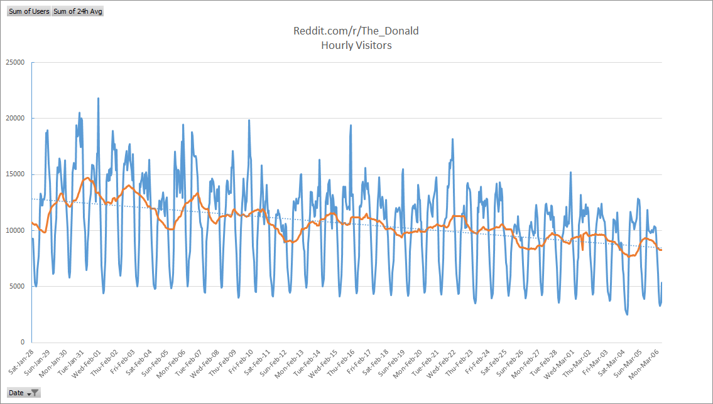
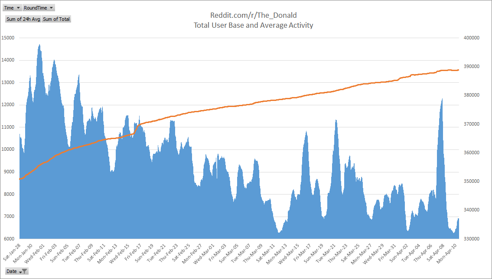

Here are some stats from reddit.com/r/the_donald
Updated daily.

The blue line is a snapshot of "the number of logged in users viewing reddit.com/r/the_donald in the past 15 minutes" taken each hour from Jan 28, 2017 at midnight until the latest update.
The orange line is the hourly average - that is, the sum of each hour and the previous 23 hours, divided by 24 (data was collected before January 28, 2017 and is used in averaging the earliest hours).
The dotted line is a linear trend line.

This is a snapshot of the change in number of users subscribed to reddit.com/r/the_donald taken each hour from Jan 28, 2017 at midnight until the latest update.
There is also a linear trend line.

The blue bars show the 24 hour average from the first graph.
The orange line is the total number of users subscribed to reddit.com/r/the_donald taken each hour from Jan 28, 2017 at midnight until the latest update.
a
statsandgames at gmail dot com